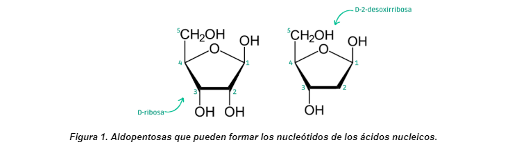
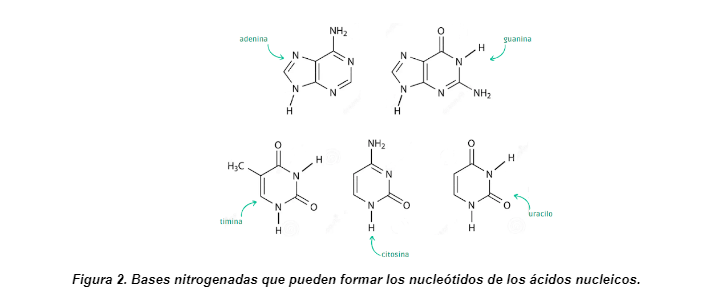
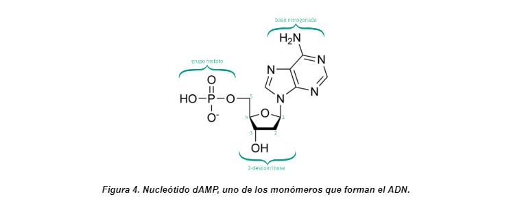

Conocimientos previos requeridos
Ácidos nucleicos
Los ácidos nucleicos son macromoléculas con una importancia biológica fundamental: se encargan de almacenar la información genética, expresarla a partir de la síntesis de proteínas y transmitirla a través de generaciones. Para comprender cómo es esto posible, se debe hacer referencia a su estructura.
Los ácidos nucleicos son el resultado de la unión de numerosos nucleótidos. Esta unidad estructural, que se representa en la Figura 1, está constituida por tres elementos: una aldopentosa, una base nitrogenada y, al menos, un grupo fosfato.
Los ácidos nucleicos son el resultado de la unión de numerosos nucleótidos. Esta unidad estructural, que se representa en la Figura 1, está constituida por tres elementos: una aldopentosa, una base nitrogenada y, al menos, un grupo fosfato.
Aldopentosa: se trata de un monosacárido de cinco átomos de carbono, cuyo grupo funcional carbonilo se aloja en el carbono 1 (recordar que esta función aldehído no se aprecia en la imagen dado que, en solución, reacciona con su anteúltimo grupo oxhidrilo para adoptar una estructura cíclica). En particular, la aldopentosa integrante de las moléculas de ácidos nucleicos puede ser D-ribosa o D-2-desoxirribosa. Si bien su definición química es importante, para nuestro estudio, bastará con conocer que la D-2-desoxirribosa se diferencia de la D-ribosa por la falta de un átomo de oxígeno en su segundo carbono. La presencia o ausencia de este elemento, le confiere a la aldopentosa propiedades químicas diferentes. De esta manera, si todas las aldopentosas de todos los nucleótidos de un ácido nucleico no contienen este átomo de oxígeno, se los denomina ácidos desoxirribonucleicos o ADN. Asimismo, si todos sus nucleótidos están formados por moléculas de D-ribosa, se trata de un ácido ribonucleico o ARN.

Base nitrogenada: son compuestos de carácter básico ricos en nitrógeno; de allí su nombre. Las bases nitrogenadas que pueden formar parte de los ácidos nucleicos son cinco: adenina (A), guanina (G), timina (T), citosina (C) y uracilo (U). Tal como se puede ver en la Figura 2, mientras que la estructura de la adenina y la guanina cuenta con dos ciclos fusionados, la timina, la citosina y el uracilo sólo tienen uno. Por ello, a las primeras se las denomina bases púricas (aquellas que derivan de un compuesto llamado purina) y a las segundas se las llama bases pirimidínicas (aquellas que derivan de un compuesto llamado pirimidina). Una propiedad de las bases nitrogenadas que es fundamental para la electroforesis de ADN es que son capaces de absorber radiaciones en la región ultravioleta del espectro. Si bien estas moléculas no son coloreadas, esta cuestión permite visualizar fácilmente la separación de los analitos.

Grupo fosfato: el anión fosfato es una estructura que surge de la desprotonación del ácido ortofosfórico. Los átomos de oxígeno de los grupos oxhidrilo captan el único electrón de los átomos de hidrógeno, ionizándose, de manera que el compuesto adquiere tres cargas negativas. Cabe aclarar que, como todo ácido poliprótico, el grado de desprotonación del ácido ortofosfórico depende del pH del medio.
Estos tres elementos no se unen de cualquier manera; la base nitrogenada siempre se aloja en el carbono 1 de la aldopentosa y el grupo fosfato, al carbono 5. Teniendo esto en cuenta, estamos en condiciones de representar cualquier nucleótido, como, por ejemplo:

La estructura primaria de un ácido nucleico corresponde al orden en el que se disponen sus nucleótidos, es decir, su secuencia de nucleótidos. ¿Alguna vez te preguntaste cómo hace el ADN para guardar información? La información genética de los ácidos nucleicos está codificada en un orden exacto de nucleótidos. Es decir, que el orden que adoptan estas unidades estructurales en la cadena es el “lenguaje” que tiene nuestro cuerpo para guardar la información. Por ejemplo, en el ADN, una secuencia de tres nucleótidos formados por una base de guanina, una base de citosina y una base de adenina es una manera que tiene nuestro organismo para guardar la información de cómo sintetizar la alanina, un aminoácido que forma parte de las proteínas. Esto es posible a partir de la transcripción y traducción del ADN, dos procesos que, si bien aparentan ser muy complejos, ocurre constantemente en cada una de nuestras células.
Campo eléctrico
La fuerza eléctricaes la interacción que tiene lugar entre dos cuerpos cargados eléctricamente. A su vez, se dice que un cuerpo tiene carga eléctrica cuando, como consecuencia de diferentes procesos (contacto, frotamiento o inducción), sufre un exceso o una deficiencia de electrones. De esta manera, si la materia pierde electrones, adquiere carga eléctrica positiva. En cambio, si gana electrones, se carga negativamente. Este es el caso de las moléculas de ADN, cuyos grupos fosfato se forman a partir de la captación del electrón del átomo de hidrógeno del ácido ortofosfórico (revisar recurso “Ácidos nucleicos”). A este fenómeno en el que un cuerpo cede electrones que son captados por otros se lo denomina electrificación.
La fuerza eléctrica es una fuerza de campo, es decir, que actúa a través del espacio, incluso cuando no existe contacto físico entre los objetos que interactúan. Para entender esto, se introduce el concepto de campo eléctrico. El campo eléctrico de una carga Q es aquella región del espacio en la que, de entrar una carga pequeña q0, experimentaría una fuerza eléctrica debido a Q. De esta manera, el campo eléctrico es una propiedad de la carga Q, la cual recibe el nombre de carga fuente. Entretanto, si bien la carga q0 no es necesaria para que el campo exista, funciona como detector del campo eléctrico, por lo que se la conoce como carga de prueba.
Matemáticamente, el campo eléctrico se define como la fuerza eléctrica que actúa sobre esta carga de prueba por unidad de carga. Cabe recordar que, de acuerdo a la ley de Coulomb, la fuerza eléctrica es directamente proporcional a la magnitud de ambas cargas involucradas. El campo eléctrico, en cambio, es independiente de la magnitud de la carga de la carga de prueba.
La fuerza eléctrica es una fuerza de campo, es decir, que actúa a través del espacio, incluso cuando no existe contacto físico entre los objetos que interactúan. Para entender esto, se introduce el concepto de campo eléctrico. El campo eléctrico de una carga Q es aquella región del espacio en la que, de entrar una carga pequeña q0, experimentaría una fuerza eléctrica debido a Q. De esta manera, el campo eléctrico es una propiedad de la carga Q, la cual recibe el nombre de carga fuente. Entretanto, si bien la carga q0 no es necesaria para que el campo exista, funciona como detector del campo eléctrico, por lo que se la conoce como carga de prueba.
Matemáticamente, el campo eléctrico se define como la fuerza eléctrica que actúa sobre esta carga de prueba por unidad de carga. Cabe recordar que, de acuerdo a la ley de Coulomb, la fuerza eléctrica es directamente proporcional a la magnitud de ambas cargas involucradas. El campo eléctrico, en cambio, es independiente de la magnitud de la carga de la carga de prueba.
Gráficamente, los campos eléctricos se representan a través de líneas de campo eléctrico. Las mismas consisten en flechas que indican el desplazamiento que sufriría una carga de prueba positiva en cada uno de los puntos que conforman al campo eléctrico de la carga fuente. Por este motivo, las líneas de campo eléctrico apuntan a una carga fuente negativa (cargas iguales se atraen) y se alejan de una carga fuente positiva (cargas opuestas se repelen). Además, a mayor cantidad de líneas dibujadas, mayor será la magnitud del campo eléctrico en esa región.
En una cuba electroforética, podemos identificar dos cargas fuente: el polo positivo, el cátodo, y el polo negativo, el ánodo. Asimismo, las moléculas de ADN a separar funcionarán como cargas de prueba. De este modo, las partículas dentro del recipiente estarán sometidas a dos campos eléctricos uniformes. Un campo eléctrico uniforme es aquel cuya magnitud y dirección son iguales en todos sus puntos. Visualmente, puede entenderse como aquel cuyas líneas de campo son paralelas y equidistantes entre sí. Debido a esto, no es difícil ver que la fuerza experimentada por cada uno de los analitos será igual a:
Y, a partir de la segunda ley de Newton:
Esta expresión guarda el fundamento de la electroforesis de ADN: indica que la aceleración que cada molécula experimentará en la cuba electroforética será directamente proporcional a la magnitud de su carga e inversamente proporcional a su masa. Dado que el campo eléctrico y la carga son iguales para todas ellas, la diferencia en la velocidad de su desplazamiento dependerá exclusivamente del tamaño de cada molécula.
Cromatografía
La cromatografía es una técnica analítica útil para identificar, separar y preparar los analitos de una muestra homogénea. Para ello, todo dispositivo cromatográfico consta de dos partes fundamentales: una fase estacionaria y una fase móvil. Por una parte, la fase estacionaria consiste en una superficie que interacciona con los analitos que pasan por ella, de modo que suministra en ellos un efecto retardador. El material escogido como fase estacionaria es de naturaleza polar. Por otro lado, la fase móvil es la que provoca el movimiento de las distintas especies para que abandonen el medio soporte, de manera que proporciona en ellos un efecto movilizador. El solvente seleccionado como fase móvil siempre es menos polar que la fase estacionaria. Como consecuencia de ambos elementos, los distintos analitos de la muestra son sometidos a dos fuerzas contrarias: las de la fase estacionaria, que tiende a adsorberlos, y las de la fase móvil, que tiende a desplazarlos. Dependiendo de la afinidad química que cada uno de ellos tenga con la fase estacionaria y la fase móvil, se moverán a diferente velocidad a través del soporte.